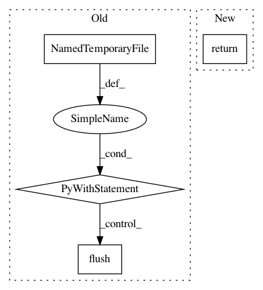

898e47242527e402f4d014fd084c31843d64d1b8,python/ray/test_utils.py,,run_string_as_driver_nonblocking,#Any#,117
Before Change
// Save the driver script as a file so we can call it using subprocess. We
// do not delete this file because if we do then it may get removed before
// the Python process tries to run it.
with tempfile.NamedTemporaryFile(delete=False) as f:
f.write(driver_script.encode("ascii"))
f.flush()
return subprocess.Popen(
[sys.executable, f.name],
stdout=subprocess.PIPE,
stderr=subprocess.PIPE)
def flat_errors():
errors = []
for job_errors in ray.errors(all_jobs=True).values():
errors.extend(job_errors)
After Change
stderr=subprocess.PIPE)
proc.stdin.write(driver_script.encode("ascii"))
proc.stdin.close()
return proc
def flat_errors():
errors = []
In pattern: SUPERPATTERN
Frequency: 3
Non-data size: 4
Instances
Project Name: ray-project/ray
Commit Name: 898e47242527e402f4d014fd084c31843d64d1b8
Time: 2020-06-27
Author: mehrdadn@users.noreply.github.com
File Name: python/ray/test_utils.py
Class Name:
Method Name: run_string_as_driver_nonblocking
Project Name: tensorflow/magenta
Commit Name: 585baded97e50985fc67dfe78b6916e9468935d6
Time: 2017-10-30
Author: 31903766+golnazg@users.noreply.github.com
File Name: magenta/models/image_stylization/image_utils.py
Class Name:
Method Name: load_np_image
Project Name: tensorflow/magenta
Commit Name: 2aa6a4da977286b4b04adc5700ad522b559f144e
Time: 2018-10-11
Author: notwaldorf@gmail.com
File Name: magenta/music/midi_io.py
Class Name:
Method Name: sequence_proto_to_midi_file